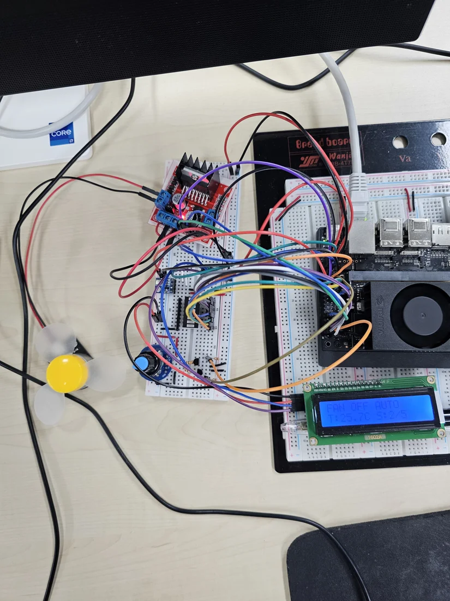

Jetson Smart Fan Controller
Linux Kernel Driver와 사용자 프로그램의 역할을 분리하고, 센서 오류와 heartbeat 중단을 고려한 스마트 선풍기입니다.
01. 프로젝트와 본인 역할
개인 프로젝트로 드라이버·사용자 제어 앱·센서 IPC를 구현했습니다. 드라이버는 기존 Linux GPIO/PWM provider를 재사용하며, 운전 정책은 사용자 공간에 둡니다.


02. 시스템 구조
저장소의 시스템 구조를 요약한 설명입니다. 각 블록은 데이터·제어 경로를 나타냅니다.
03. 핵심 설계 판단
출력과 보호 정지의 소유권
커널이 GPIO/PWM 출력과 lease·연속 구동 제한을 관리합니다. 앱의 제어 루프가 중단되는 경우를 고려해 정지 정책을 분리했습니다.
Blocking I/O를 제어 경로에서 분리
BMP180 측정은 별도 process와 pipe, LCD·로그는 worker thread로 처리합니다. 제어 상태 변경은 main에 모으고 worker에는 snapshot을 전달합니다.
복구와 재기동을 구분
센서 fault/stale 또는 보호 정지 후 정상 샘플만으로 다시 기동하지 않습니다. 사용자의 명시적인 ON을 요구합니다.
04. 문제 해결 사례
- 현상
상태 조회 뒤 AUTO 출력을 갱신하기 전에 보호 정지가 개입하면, 오래된 상태를 근거로 재기동할 수 있었습니다.
- 원인 파악
GET snapshot과 출력 변경 사이의 경쟁 경로를 확인했습니다.
- 수정
SET_AUTO에서 차단 상태·샘플 freshness·rearm 조건을 출력 변경과 같은 kernel mutex 안에서 검증합니다.
- 확인 결과
저장소에 AUTO·IPC·종료 경로 회귀 결과가 기록되어 있습니다. 최종 종료 경로 수정 후의 실물 재검증은 남아 있습니다.
05. 검증 결과와 한계
공개 자료에서 확인한 결과
저장소 검증 문서: C 테스트 11개, CLI 37개, 정리·DT 제안 6개 통과. GCC analyzer, ASan/UBSan 및 ThreadSanitizer 검증 결과가 기록되어 있습니다. 기존 실물 통합 동작과 보호 정지 확인 보고가 있습니다.
최종 종료 경로 수정 후 실물 재확인, LCD 대비, 전원 여유, RPM·발열·장기 반복 및 실제 suspend 측정은 남아 있습니다. 소프트웨어 테스트는 전기적 조건과 모든 동시 실행 순서를 보장하지 않습니다.
06. 관련 자료
사진·시연·기술 근거: 프로젝트 공개 저장소. 사진은 웹 열람을 위해 크기와 형식을 조정했습니다. 외부 영상은 링크에서 직접 재생할 수 있습니다.